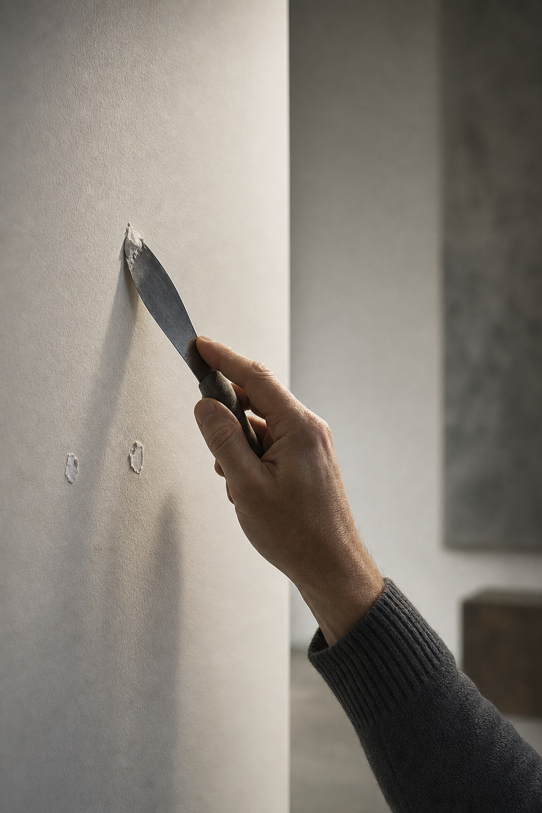
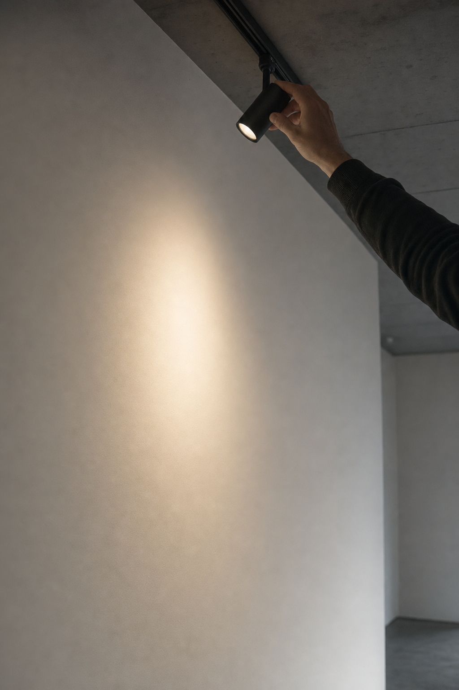

01The read
The room itself.
Liliana, I'm Nelson Taylor, a creative director and shooter in Dallas–Fort Worth. Reading the press release for the show that closes your 2026 program, opening Nov. 7, is what led me through the rest of your site, where the About page puts the gallery in one plain line:
“Founded in 2013, Liliana Bloch Gallery is a contemporary art gallery in Dallas.”Liliana Bloch Gallery, on its About page
Your program brings together regional, national and international artists, and every one of those shows is the artist's story. What stays with the gallery from show to show is the room they hang in.
And between shows, a gallery room does quiet, careful work nobody outside ever sees: nail holes filled, walls sanded and painted, lights focused for the next hang. It needs no artwork and no faces, and it belongs to your gallery alone. That's the idea for the day.
Wall 3 · between shows
02The idea
One nail hole.
One format to carry the quarter, called Fresh white. Each reel opens close on a single nail hole in a wall, where a work hung. A putty knife fills it, a sanding block passes over it, a roller crosses it, and the moment the white is even, we cut wide to the room: daylight on the floor, the doorway, the walls waiting.
Every reel ends on fresh white, so the whole quarter shares one rhythm and one look. Some cuts follow a light being focused, a warm pool easing into place on bare wall; others follow footsteps through the room at the end of the day. Hands, tools and light carry it, so nobody has to step in front of the lens.
Artwork appears only if the artist says yes and you do. Without it, the room carries every reel on its own.

Wall 2 · one nail hole
03What we'd shoot
Six walls, one day.
One day in the gallery, on whichever day suits you. Your hours are Thursday to Saturday, noon to five, so a morning outside them gives us the room, and a changeover day gives us the walls bare. The plan keeps to hands, tools, light and the empty room.
-
Wall 1 · first light
Creative direction — treatment frames, not final footage. First light
The room before anyone arrives, daylight on bare walls, held wide on the FX6. The same frame again after dark closes the day.
-
Wall 2 · the fill
Creative direction — treatment frames, not final footage. The fill
Macro on a nail hole: a putty knife, a smear of spackle, one clean pass. Shot on several walls, so every reel in the quarter gets an opener of its own.
-
Wall 3 · the sand
Creative direction — treatment frames, not final footage. The sand
A sanding block in low raking light, fine dust drifting through the beam. The A7RV holds the texture up close for the stills bank.
-
Wall 4 · the roller
Creative direction — treatment frames, not final footage. The roller
One long stroke of white across the wall, the patch disappearing under it. This is the cut every reel lands on.
-

Wall 5 · the focus
Creative direction — treatment frames, not final footage. The focus
A hand on a lamp head, a pool of warm light easing into place on the wall. Slow and patient, and made for a vertical frame.
-
Wall 6 · the walk
Creative direction — treatment frames, not final footage. The walk
Your walk-through as footsteps and hands only: fingertips along a wall edge, a pause in the doorway, the tools put away, the room ready.
Alongside the reels, the A7RV builds a stills bank from the same day and the same light: walls, corners, tools, light across the floor and the room hour by hour, ready for the grid, the site and the announcements across the quarter.
04The day
The day, simply.
So there are no surprises.
- 01One shoot day at Liliana Bloch GalleryIn your gallery, directed and shot by me.
- 02Sony FX6 + Sony A7RVThe FX6 for cinema motion; the A7RV for stills and hybrid.
- 03Vertical firstEvery deliverable is cut 9:16 for Reels, TikTok and Shorts.
- 04Edited vertical videos and a stills bankAll from the same day, built to run for a quarter.
- 05Two rounds of editsAbout two weeks from the shoot to delivery.
Artwork only with the artist's yes and yours. Anything beyond that, we'd work out together on a call.
Wall 5 · the light
05The shooter
Behind the lens.
I'm Nelson Taylor, and Taylormade Creative is my studio in Dallas–Fort Worth. I've spent fourteen years in design and creative direction, and most of my days now go into brand content that I direct, shoot on the FX6 and the A7RV, and edit myself.
My content work includes TONI&GUY Academy and Dreamcatchers Hair, and my client work over the years has included Lava Cantina, KFC and Curls.
Design is where I started, so I read a room the way I'd read a page: the white space is doing the work. I plan, shoot and edit the day myself, so what's on this page is what the edit follows.
- 14 yearsin design and creative direction
- Two camerasFX6 for motion, A7RV for stills
- Verticalevery cut made 9:16
- One personplanning, shooting and editing
Wall 2 · the knife
Wall 6 · the room ready
06A conversation
When it suits.
No rush at all; read it between visitors.
If Fresh white feels like your gallery, I'd be glad to talk it through on a short call: the opener, the six walls, which day suits the room, and anything I've missed.
If now isn't the moment, “not yet” is a perfectly good answer, and the concept will be here.
Email NelsonFounder & Creative Director · Taylormade Creative
(817) 707-1291 · taylormademd@gmail.com
www.taylormadecreative.net · @taylormade_creative